Procedure
Repair of polypropylene bumpers having damage that has reached the surface of the polypropylene and are too serious to be restored by painting only.
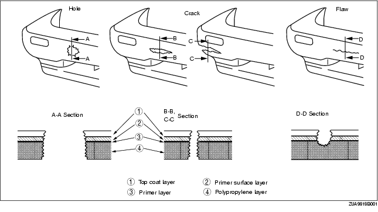
1. Cut the rough edges around the damage with a knife to make it smooth. Sand the area with a sander to make an angle of about 45°.
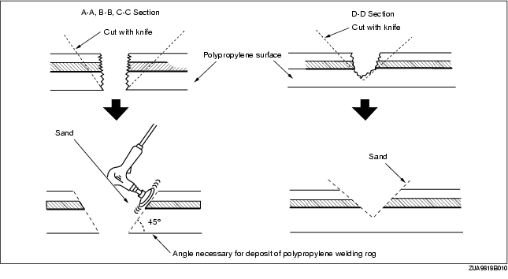
2. Weld the damaged area.
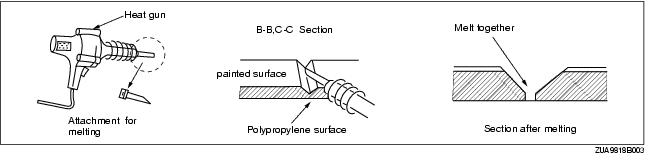
- • For repair of a hole, degrease the area on both sides of the bumper and apply aluminium tape on the reverse side of the damage area.
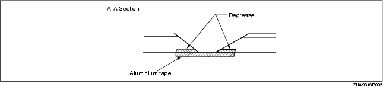
3. Melt the polypropylene welding rod with a heat gun and deposit it the cracked area.
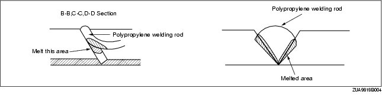
- • Heat the shaded area to melt it.
- • Take care not to overly melt welding rod. If the part is welded with the welding rod melted like jelly, the welding strength will be reduced.
- • Hold the heat gun 10-20 mm {0.39-0.79 in} from the part being welded.
- • Do not move the welding rod until the welded parts cool.
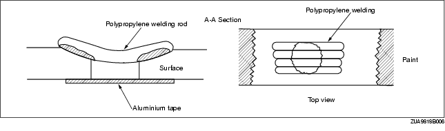
4. Sand the surface of the polypropylene gradually as it is easily melted by the abrasion heat. Sand the area to which repair agent will be applied.
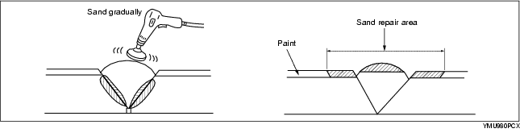
5. Uniformly apply polypropylene primer with a brush to an area larger than the repaired area. Allow to dry about 10 minutes at 20 °C {68 °F}.
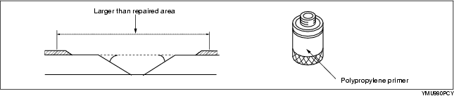
6. Mix the main agent and the stiffening agent in a ratio of one to one. Apply the mixed repair agent to the damaged area.
- • When mixing the main and stiffening agents, take care not to allow bubbles to form.
- • The repair agent hardens quickly (about 5 minutes); proceed with the work immediately after mixing the agents.
- • Allow about 30 minutes to dry (20 °C {68 °F}) before sanding.
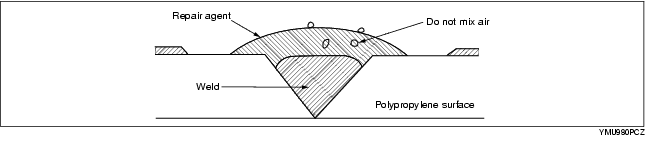
The repair agent is a two part epoxy adhesive.
When the repair agent hardens, it will provide a good finish with the same flexibility as the polypropylens.
The repair agent for a urethane bumper is also a two part adhesive compound. However, this is different from that for a polypropylene bumper. If the incorrect repair agent is used, the repair will be faulty.
7. Sand the area with #180-240 sandpaper.
- • If excessive force is applied to the area when sanding, the surface will be damaged.
- • If fuzz remains around the repaired area, melt it with a heat gun.
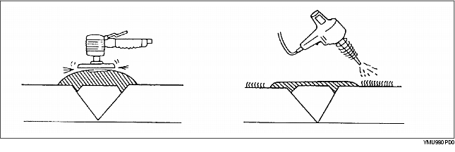
8. Degrease the painted surface.
9. Mix the primer and the hardener at a ratio of one to one. Apply the primer to the repaired area and the surface of the bumper with a brush or spray.
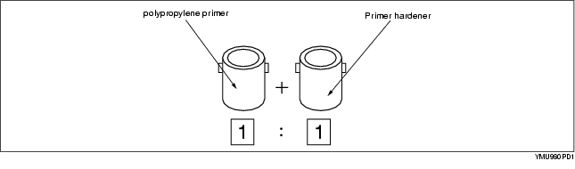
Use the primer within 16 hours after it is mixed.
- • Polypropylene primer will dissolve even after drying if it is wiped with solvent. Use only water to clean around the primer.
10. Allow the part to dry.
11. Add the softener to the urethane primer surfacer and spray it on the repaired area.
- a. Mixing method
- Urethane primer surfacer + Softener ..... Mixture A
- Mixture A + hardener ..... Mixture B
- Dilute mixture B with thinner to spray on bumper
- b. Viscosity
-
14-16 seconds/viscosimeter 20 °C {68 °F}
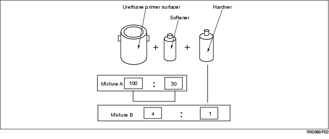
- c. Spray pressure
- 300-400 kPa {3-4 kg/cm2, 43-57 psi}
- d. Standard film thickness
- 30-40 m
- e. Spray method
- Spot-spray primer surfacer on bumper three of four times
12. Air drying 20 °C {68 °F} - 8 hours minimum.
Forced drying 60 °C {140 °F} - 1 hour
13. Lightly sand the complete surface of the bumper with #400-#600 sandpaper. Do not expose the surface of the polypropylene. (Wet or dry sanding is acceptable.)
14. Wipe the complete surface of the bumper with degreasing agent. Quickly wipe the surface with a clean rag to degrease it.
15. Apply a matching coat of body color to the polypropylene bumper.
- • Be sure to use only urethane primer for a urethane bumper and polypropylene primer for a polypropylene bumper. Other paints for repairing a polypropylene bumper are the same as those for the urethane bumper.
16. Air drying 20 °C {68 °F} - 8 hours minimum.
Forced drying 60 °C {140 °F} - 1 hour